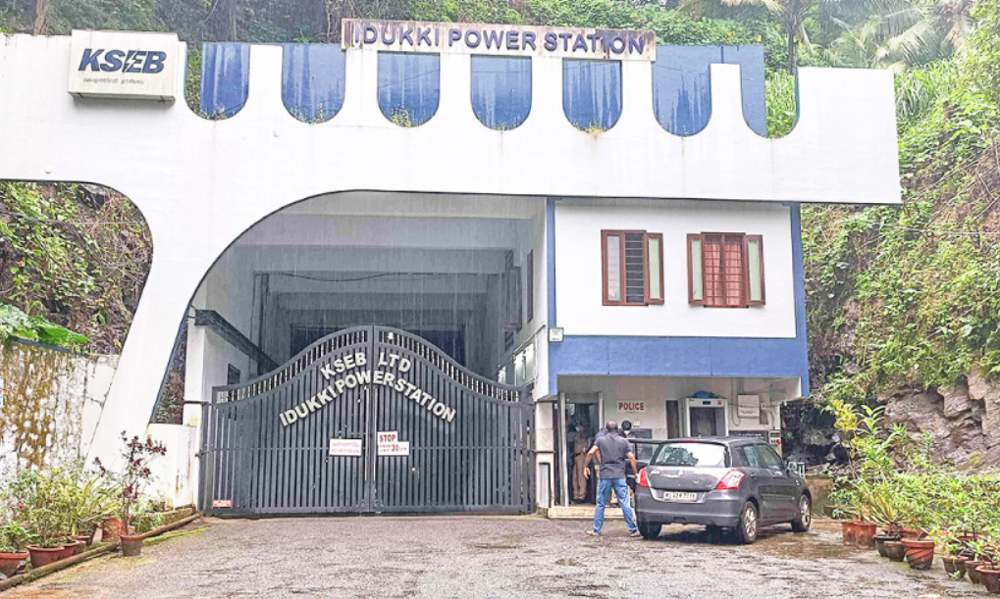
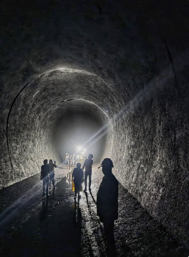
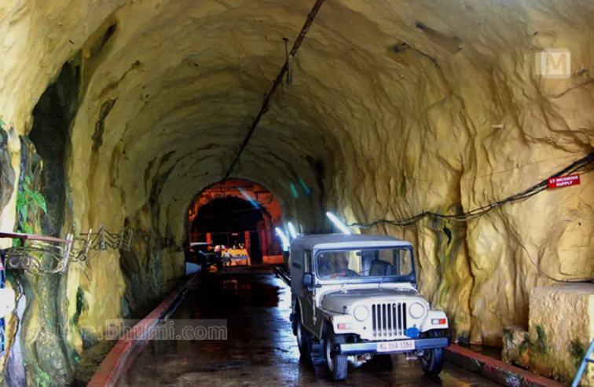

Moolamattom Power House is the largest underground hydroelectric power station in Kerala. It is located in Idukki district and forms an important part of the Idukki Hydroelectric Project. Water stored in the Idukki, Cheruthoni, and Kulamavu dams is carried through underground tunnels to generate electricity. The power house plays a major role in meeting the electricity needs of Kerala.
Surrounded by green hills and forests, Moolamattom is known for its engineering excellence and scenic beauty. Visitors can enjoy the peaceful atmosphere and learn about hydroelectric power generation. The nearby landscapes and the importance of the project make Moolamattom Power House an interesting destination for students, tourists, and nature lovers.



Moolamattom Power House is the largest underground hydroelectric power station in Kerala and one of the largest underground power stations in India. It is located at Moolamattom in Idukki District and forms the powerhouse of the famous Idukki Hydroelectric Project. Water stored in the Idukki, Cheruthoni and Kulamavu dams is used to generate electricity here. 1
The Moolamattom Power House was constructed by the Kerala State Electricity Board (KSEB) as part of the Idukki Hydroelectric Project. The first generating unit was commissioned in 1976, and additional units were added later, making it one of Kerala's most important engineering achievements. 2
The power station has an installed capacity of 780 MW, consisting of six generating units of 130 MW each. Water from the Idukki Reservoir is carried through underground tunnels and penstocks to generate hydroelectric power before flowing into the Thodupuzha River. 3
The power house is surrounded by forests, hills and rivers. The area is rich in greenery and supports many species of birds, plants and wildlife, making it an important part of Idukki's natural environment.
Today, Moolamattom Power House is one of Kerala's most important electricity-generating stations. It supplies power to a large part of the state and is recognized as one of India's greatest underground hydroelectric engineering projects. 4